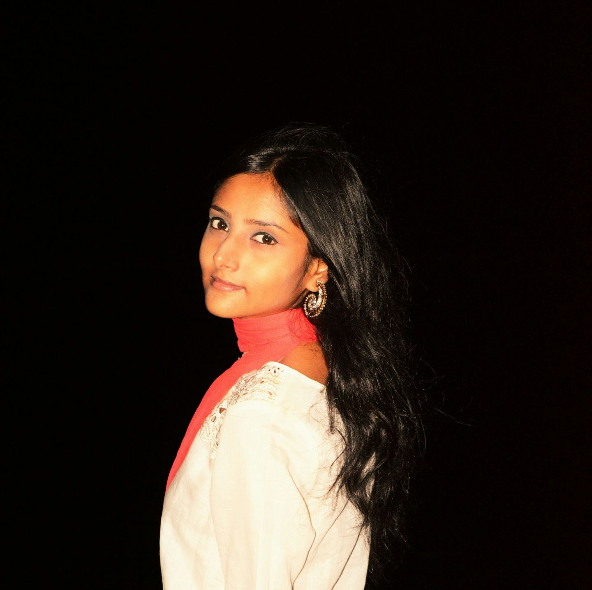
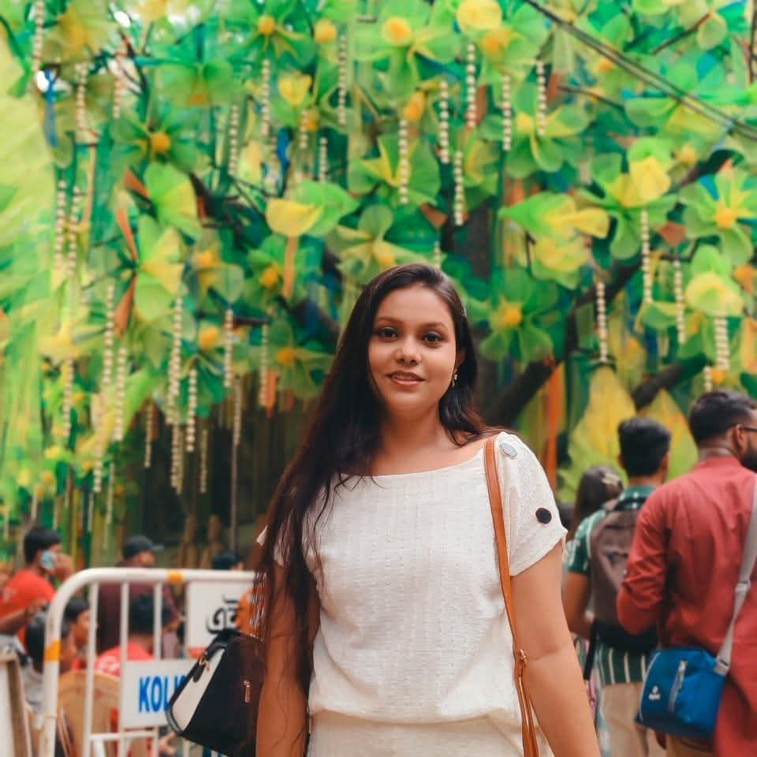

The Founders
Scholars and researchers committed to feminist scholarship and social change.

Debasree Sarkar
Co-Founder & Researcher
Having completed her MA in History from Presidency University and M.Phil. in Women's Studies from the School of Women's Studies, Jadavpur University, Debasree is presently pursuing Ph.D. from the Department of History, Diamond Harbour Women's University (Sarisha, West Bengal, India). The theme of her research has been reading the social history of Bengal through women's autobiographical writings, with special emphasis on their sartorial changes. Apart from being involved in various academic projects, she has published in reputed newspapers and journals and contributed book chapters dealing with fashion, gender-based violence, representational politics, displacement, and environment. She has presented in international platforms such as the Dress and Body Association and the Northeast Popular Culture Association. Recently, she collaborated on a project on "The Past as Present: Approaches to Pedagogy in History and Archaeology" organised by the Shiv Nadar University. She was awarded the Papia Ghosh Memorial Prize at the 83rd session of the Indian History Congress in 2024 for her paper on "Sati and Its Afterlife: Social Desire and Public Discourse." She is also on the New Scholars' Committee in NiCHE Canada.

Amrita DasGupta
Co-Founder & Researcher
Amrita is a PhD scholar at the Department of Gender Studies in the School of Oriental and African Studies (SOAS University of London) and a guest teacher at the London School of Economics and Political Science (LSE). Her research focuses on the evolution and history of port brothels in the Indian Ocean deltas. She has been a fully funded visiting student research collaborator at Princeton University, a visiting scholar at the King's India Institute (King's College London), a Landhaus Fellow at the Rachel Carson Centre for Environment and Society, LMU. Her decade-long research on the Sundarbans was recognised at the launch of the "Mangrove Project" at the House of Lords, Parliament of the United Kingdom. Some of her recent publications are "Puppets at the Hands of Water" published in the Springs Journal (2025), "Accommodative Apparatus: Drawing the Life of Sex Work on the Eroding Coasts of Sundarbans" in the Environment and History Journal (2024).
Research Intern

Ingita Datta
Research Intern
Ingita Datta is a postgraduate student of Ancient Indian and World History from The Sanskrit College and University, where she also completed her B.A. (Honours) in the same discipline. Her academic interests center on Ancient Indian history, women's history, and the representation of women across various religious traditions and cultural contexts. She is particularly interested in examining how women's voices, identities, and lived experiences are articulated within religious texts and historical narratives. Her Master's research project, "Therīgāthā: Therider Bohumātrik Swar," explores the multidimensional voices of early Buddhist nuns through the original Pali text of the Therīgāthā, highlighting women's agency and spiritual self-expression in early Buddhist tradition.
She has participated in workshops on interdisciplinary historical methodology and museum studies, and undertook a field study at Chandraketugarh, gaining practical exposure to archaeological and heritage research. She has also volunteered in heritage-related cultural programs, demonstrating initiative, teamwork, and organizational skills. Having studied Pali extensively at both undergraduate and postgraduate levels, she possesses strong textual interpretation and analytical abilities. She also holds a Diploma in Computer Application and has five years of experience teaching school and undergraduate students, reflecting her communication and mentoring skills. Ingita is keen to contribute her academic training, research aptitude, and deep interest in gender and religious studies.